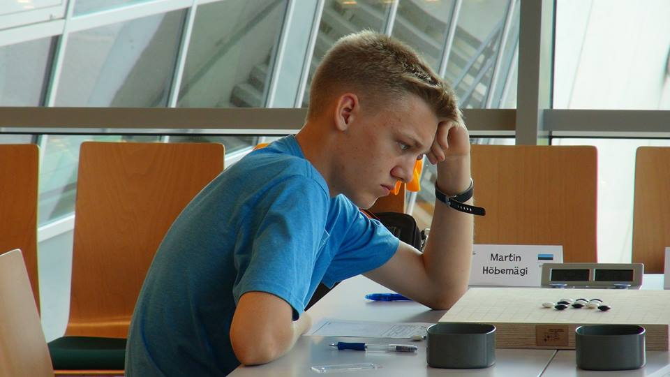
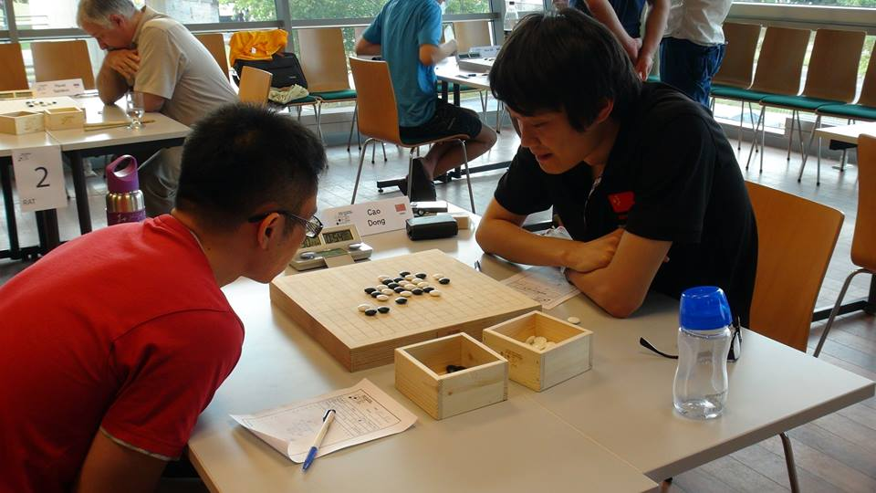

2013年世錦賽照特寫照
#1 2013年世錦賽照特寫照 作者：蘭妮 发表时间：2013-8-10 14:41:03
原作者:Gomokuworld in Facebook
悠閒周末分享一下若干照片~~


欣賞完後請再替她們加加油打打氣吧~~
［ 失落刀 于 2013-8-10 15:19:15 时奖励此帖[金币加 100 威望加1］
［ 一侠客一同学于 2013-8-10 15:24:46 时花20金币送鲜花一朵］
［ 一侠客一同学于 2013-8-10 15:24:46 时花20金币送鲜花一朵］
［ 一侠客一同学于 2013-8-10 15:24:46 时花20金币送鲜花一朵］
［ 一侠客一同学于 2013-8-10 15:24:46 时花20金币送鲜花一朵］
［ 一侠客一同学于 2013-8-10 15:24:46 时花20金币送鲜花一朵］
［ 小红眼镜同学于 2013-8-10 16:05:09 时花20金币送鲜花一朵］
［ 伤情路同学于 2013-8-10 18:33:51 时花20金币送鲜花一朵］
［ 炫魂皇寒同学于 2013-8-10 19:48:48 时花20金币送鲜花一朵］
［ 炫魂皇寒同学于 2013-8-10 19:48:48 时花20金币送鲜花一朵］
［ 炫魂皇寒同学于 2013-8-10 19:48:48 时花20金币送鲜花一朵］
［ 炫魂皇寒同学于 2013-8-10 19:48:48 时花20金币送鲜花一朵］
［ 炫魂皇寒同学于 2013-8-10 19:48:48 时花20金币送鲜花一朵］
［ 炫魂皇寒同学于 2013-8-10 19:48:48 时花20金币送鲜花一朵］
［ 炫魂皇寒同学于 2013-8-10 19:48:48 时花20金币送鲜花一朵］
［ 炫魂皇寒同学于 2013-8-10 19:48:48 时花20金币送鲜花一朵］
［ 炫魂皇寒同学于 2013-8-10 19:48:48 时花20金币送鲜花一朵］
［ 炫魂皇寒同学于 2013-8-10 19:48:48 时花20金币送鲜花一朵］
［ 黄药师同学于 2013-8-10 22:23:59 时花20金币送鲜花一朵］
［ 黄药师同学于 2013-8-10 22:23:59 时花20金币送鲜花一朵］
［ 黄药师同学于 2013-8-10 22:23:59 时花20金币送鲜花一朵］
［ 黄药师同学于 2013-8-10 22:23:59 时花20金币送鲜花一朵］
［ 黄药师同学于 2013-8-10 22:23:59 时花20金币送鲜花一朵］
［ 黄药师同学于 2013-8-10 22:23:59 时花20金币送鲜花一朵］
［ 黄药师同学于 2013-8-10 22:23:59 时花20金币送鲜花一朵］
［ 黄药师同学于 2013-8-10 22:23:59 时花20金币送鲜花一朵］
［ 黄药师同学于 2013-8-10 22:23:59 时花20金币送鲜花一朵］
［ 黄药师同学于 2013-8-10 22:23:59 时花20金币送鲜花一朵］
［ 黄药师同学于 2013-8-10 22:23:59 时花20金币送鲜花一朵］
［ 黄药师同学于 2013-8-10 22:23:59 时花20金币送鲜花一朵］
［ 黄药师同学于 2013-8-10 22:23:59 时花20金币送鲜花一朵］
［ 黄药师同学于 2013-8-10 22:23:59 时花20金币送鲜花一朵］
［ 黄药师同学于 2013-8-10 22:23:59 时花20金币送鲜花一朵］
［ 黄药师同学于 2013-8-10 22:23:59 时花20金币送鲜花一朵］
［ 黄药师同学于 2013-8-10 22:23:59 时花20金币送鲜花一朵］
［ 黄药师同学于 2013-8-10 22:23:59 时花20金币送鲜花一朵］
［ 黄药师同学于 2013-8-10 22:23:59 时花20金币送鲜花一朵］
［ 黄药师同学于 2013-8-10 22:23:59 时花20金币送鲜花一朵］
［ 小丸.net同学于 2013-8-10 22:35:20 时花20金币送鲜花一朵］
［ 小丸.net同学于 2013-8-10 22:35:20 时花20金币送鲜花一朵］
［ 小丸.net同学于 2013-8-10 22:35:20 时花20金币送鲜花一朵］
［ 小丸.net同学于 2013-8-10 22:35:20 时花20金币送鲜花一朵］
［ 小丸.net同学于 2013-8-10 22:35:20 时花20金币送鲜花一朵］
［ 小丸.net同学于 2013-8-10 22:35:20 时花20金币送鲜花一朵］
［ 小丸.net同学于 2013-8-10 22:35:20 时花20金币送鲜花一朵］
［ 小丸.net同学于 2013-8-10 22:35:20 时花20金币送鲜花一朵］
［ 小丸.net同学于 2013-8-10 22:35:20 时花20金币送鲜花一朵］
［ 小丸.net同学于 2013-8-10 22:35:20 时花20金币送鲜花一朵］
#2 Re:2013年世錦賽照特寫照 作者：三道 发表时间：2013-8-10 15:06:28
棋子亮了#3 Re:2013年世錦賽照特寫照 作者：华夏使者 发表时间：2013-8-10 15:11:28
我还真是发现欧洲的棋子和国内的不一样。#4 Re:2013年世錦賽照特寫照 作者：三道 发表时间：2013-8-10 15:14:52
围棋子#5 Re:2013年世錦賽照特寫照 作者：满月 发表时间：2013-8-10 15:15:02
棋子那张特别有feel#6 Re:2013年世錦賽照特寫照 作者：小红眼镜 发表时间：2013-8-10 15:51:14
 棋子也分围棋还是五子棋咩。。。我以为只是棋盘区分呢。求科普。。。
棋子也分围棋还是五子棋咩。。。我以为只是棋盘区分呢。求科普。。。
#7 Re:2013年世錦賽照特寫照 作者：小红眼镜 发表时间：2013-8-10 16:04:58

棋子分黑、白两色，形状为扁圆形，有一面凸起，厚度不超过0.8厘米，直径为2.0～2.3厘米。
棋子数量为黑色棋子113枚，白色棋子112枚。
棋子材质、重量不限，但应为硬质，不易磨损，且适合于方便移动，放在棋盘上具有一定稳定性。
#8 Re:2013年世錦賽照特寫照 作者：怪 发表时间：2013-8-10 16:11:50
这是双凸棋子，感觉没单凸的放得稳。。#9 Re:2013年世錦賽照特寫照 作者：蘭妮 发表时间：2013-8-10 16:18:11
台北使用的一直是雙凸棋子
比山口規的時候擺出Ｎ打後
我就分不清楚是開哪個局了
記譜紙在這時後就有用處了
XD
#10 Re:2013年世錦賽照特寫照 作者：三道 发表时间：2013-8-10 17:04:32
我发现我老喜欢转移主题，你们怎么也总是跟着来呢，哈哈。#11 Re:2013年世錦賽照特寫照 作者：励精 发表时间：2013-8-10 17:07:04
中国五子棋规则棋子是参照中国围棋的，日本围棋是两面凸棋子，中国围棋是一面凸棋子。欧洲棋子是两面平的，像药片。
#12 Re:2013年世錦賽照特寫照 作者：三道 发表时间：2013-8-10 17:12:06
楼上，坦克是叫Taimla Tunnet ，还是 Tunnet Taimla？我看来看去好像你ljrenju网站上弄错了啊？#13 Re:小红眼镜【==Re:2013年世錦賽照特寫照==】 作者：掌棋宣传员 发表时间：2013-8-10 17:58:40
感觉2013版本的规则不如2002的严谨了,黑白保证最少180颗棋子是正确的,曾经在课堂上和讨过:#14 Re:2013年世錦賽照特寫照 作者：幾 发表时间：2013-8-10 18:00:32
李昌镐有个著名的棋子反放。我猜测日本韩国都是双面凸。中国两种都有。双面凸比较容易用手指捏起来。五子棋棋子和围棋子一样的吧。#15 Re:2013年世錦賽照特寫照 作者：励精 发表时间：2013-8-10 18:26:41
回12楼。爱沙尼亚棋手Taimla Tunnet，网名坦克，他的名字是泰姆拉，他的姓是特耐特，欧洲人和亚洲人习惯不一样，他们习惯是名在前姓在后（在列表中要倒过来。），亚洲人是姓在前名在后。中国最近有过一个名字翻译用法的规定，中国人名翻译为外文一律用姓在前名在后的方式，对欧洲人名尊重他们的习惯。但是，欧洲人并没有弄明白中国人的姓和名的关系，比如，他们翻译中国人名是Dong Cao，而且他们把日本人名顺序也弄乱了，比如在世锦官网Player栏目里，日本人名Yuki Oosumi（友希大角）就是名在前姓在后，而中国人名Wang Qingqing（汪清清）就姓在前名在后。而在Result栏目中又全倒过来了，日本人名就成了Oosumi Yuki 大角友希正序，中国人名就成Qingqing Wang 清清汪倒序了。
我在励精教室里亚洲人一律写成姓名格式，欧洲人一律用名姓格式（有些未涉及亚洲人的欧洲比赛就按他们的报道直接Copy过来了）。
#16 Re:2013年世錦賽照特寫照 作者：三道 发表时间：2013-8-10 18:32:19
你看照片。照片上的是Tunnet Taimla#17 Re:2013年世錦賽照特寫照 作者：伤情路 发表时间：2013-8-10 18:37:31
还有穿衬衫打领带去比赛的啊..会不会很热
#18 Re:2013年世錦賽照特寫照 作者：黄药师 发表时间：2013-8-10 22:25:40
两面凸的棋子，桌子稍微一动，估计就晃个不停，比如像大鱼，小朱，九指这种级别的，稍微一碰桌子，哈哈
#19 re:2013年世錦賽照特寫照 作者：小丸.net 发表时间：2013-8-10 22:34:02
你们这些人真无聊，棋子两面凸还是一面凸都能聊这么起劲。。。。#20 Re:2013年世錦賽照特寫照 作者：小红眼镜 发表时间：2013-8-10 23:41:16
 这是很严肃学术探讨。。。。
这是很严肃学术探讨。。。。
#21 Re:2013年世錦賽照特寫照 作者：三道 发表时间：2013-8-11 13:49:13
15楼，人家叫 Tunnet 姓是Taimla 你搞反啦。Tunnet Taimla。#22 Re:2013年世錦賽照特寫照 作者：如火流年 发表时间：2013-8-12 0:34:55
［ 小红眼镜同学于 2013-8-12 11:39:25 时花20金币送鲜花一朵］
［ 小红眼镜同学于 2013-8-12 11:39:25 时花20金币送鲜花一朵］
#23 Re:2013年世錦賽照特寫照 作者：屏蔽 发表时间：2013-8-12 8:01:52
我还是喜欢稳稳当当的……#24 Re:2013年世錦賽照特寫照 作者：三道 发表时间：2013-8-13 10:02:38
五子棋不需要提子，所以单面凸最好，现在山口规则另当别论了。围棋需要提子，所以双面凸科学些。#25 Re:2013年世錦賽照特寫照 作者：屏蔽 发表时间：2013-8-13 10:07:43
其实山口规则也是不需要提子的。#26 Re:2013年世錦賽照特寫照 作者：三道 发表时间：2013-8-13 10:09:49
好吧，那就换个字吧。#27 Re:2013年世錦賽照特寫照 作者：水月 发表时间：2013-8-15 13:18:39
提子比葡萄好吃。。。